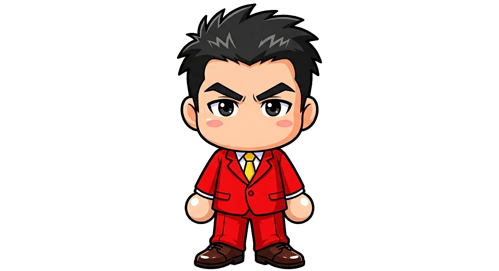

主人公 表情差分 5種 生成AI不使用
64×96・固定14色。基本マスターから目＋眉の行だけをテキスト編集して再レンダリング。
それ以外の行はバイト単位で基本と同一＝絵柄がブレない。
5表情ならべ
左から: 基本 / 笑い / 驚き / スベリ / ツッコミ

基本

笑い

驚き

スベリ

ツッコミ
大きく見る（タップで切替）
元イラスト(参照)との比較

元イラスト
ドット絵マスター
64×96・固定14色。基本マスターから目＋眉の行だけをテキスト編集して再レンダリング。
それ以外の行はバイト単位で基本と同一＝絵柄がブレない。
